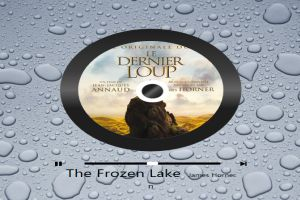
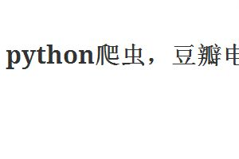
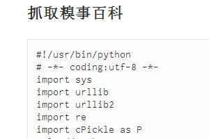

教育经历
| 时间 | 学校 | 专业 | 主要课程 |
|---|---|---|---|
| 2005-2008 | 安福中学 | 理科 | |
| 2009-2012 | 华南理工大学 | 微电子技术 | 《模拟电路》《数字电路》《信号与系统》《数字信号处理》《微机原理与应用》 |
| 2013-2017 | 电子科技大学 | 计算机科学与技术 | 《C/C++》《计算机组成原理》《数据结构与算法》《数字逻辑》《编译原理》《操作系统》《Java与软件工程》 |
| 待定 | waiting | waiting | waiting |
获奖情况
| 时间 | 奖项 | 等级 | 说明 |
|---|---|---|---|
| 2011 | 国家奖学金 | 一等 | |
| 2010 | 三好学生 | 成绩优异，荣获“三好学生”称号 | |
| 2011 | 华南理工大学校园宣传工作先进个人“一等奖” | 一等 | 在华南理工大学学生记者团工作，工作认真负责，在年度评优中，获得先进个人奖，并由校党委书记亲自颁发奖状与证书。 |
| 2011 | 华南理工大学学生记者团“优秀记者” | 在华南理工大学学生记者团，工作认真严谨，责任心强，多次采访著名教师和著名校友，并积极投稿。 | |
| 2010 | 华南理工大学世界读书日征文比赛“二等奖” | 一等 | 在华南理工大学“世界读书日征文比赛”中，积极投稿，以总评分全校第二，获得二等奖。 |
| 2011 | 华南理工大学世界读书日征文比赛“三等奖” | 在华南理工大学“世界读书日征文比赛”中，积极投稿，荣获“三等奖”。 | |
| 2013 | 人民奖学金 | 二等 | 在电子科技大学，2013-2014学年，学习成绩排本专业15名，获得人民奖学金。 |
| 2014-2015 | 人民奖学金 | 在电子科技大学，2014-2015学年，本专业综合排名前10%，获得人民奖学金。 | |
| 2014 | 发表文章 | 在电子科技大学校刊《新翼》以独立作者身份发表文章。 |
项目经历
| 编号 | 时间 | 项目名称 | 内容 |
|---|---|---|---|
| 1 | 2011 | 基于姿态与位置定位的传感器的设计 | 主要负责单片机以及 FPGA 程序的编写。 |
| 2 | 2012 | 基于姿态与位置定位的传感器的设计 | 负责 PCB 板的制作，单片机等相关程序的编写和英文资料的阅读。 |
| 3 | waiting | waiting | waiting |
| 3 | TB - Monthly | 03/04/2012 | Pending |
| 4 | TB - Monthly | 04/04/2012 | Call in to confirm |
兴趣爱好
- 爱读书
- 世间迷途小书童，读过一些书。文学、哲学、美学、心理学等等，涉猎还算广泛。因为三分钟热度的毛病。
- 爱运动
- 热爱足球，虽然中国足球那么烂，但我还是喜爱足球，所以你知道我对足球的热爱有多深了吧。这辈子只为三种事，一个人坐到了天明。其一，年少无知时，我爱的人不爱我。其二，足球主队失利的夜晚。其三，强迫症，为了一段代码。
- 爱文艺
- 文艺闷骚小青年，不知愁滋味。热爱文学，文艺，但不装13。因为我是真文艺，外表狂放，内心文艺。人不可貌相，也曾拿过许多征文比赛大奖。
- 爱折腾
- 爱折腾电子diy，电脑拆过M台。手机拆过N个。。。修好过许多，也修坏过许多。但生命不息，折腾不止。
自我评价
沽名钓誉，一无所成。最传奇的无非读过两个重点高中，两个985重点大学。生活态度积极乐观，热爱生活一言以蔽之，暖男一枚，但不是云备胎。
项目展示
-

-

-

-
-

基于淘宝Ip服务接口抓取中国IP信息，并存入数据库
基于淘宝Ip服务接口抓取中国IP地址信息，利用python语言。首先，相关互联网网站上找到中国Ip地址的主要IP段，再进行分析。逐渐缩小范围。x.x.x.(1-254)一定在一个区域
-

-

-

-

-

-

-